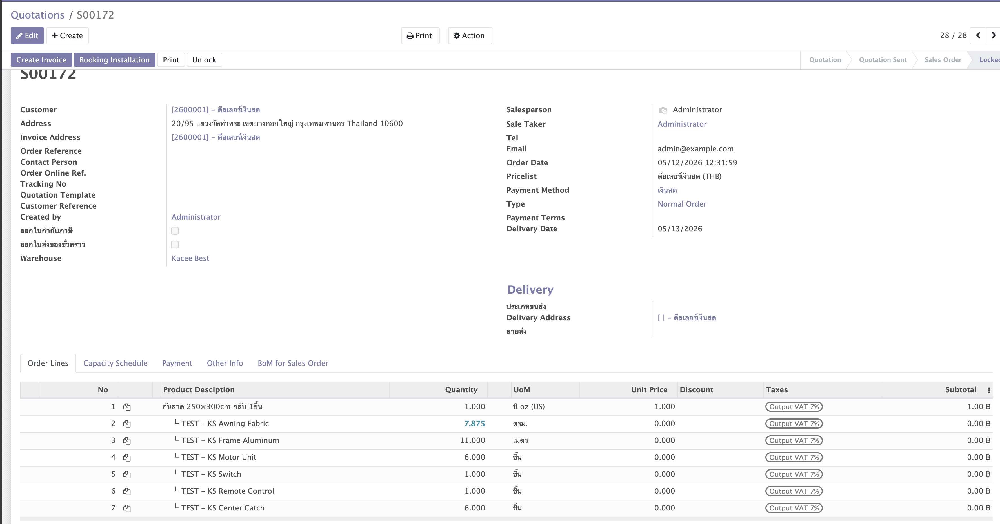

Dynamic BoM
rules that think
Write Python rules on individual BoM lines to calculate component quantities, set product names, and auto-create product variants — all driven by a single configuration wizard on the Sales Order.
Architecture Overview
Two modules work together: bs_dynamic_bom_rule adds Python rule
fields to BoM lines, and bs_dynamic_bom_sale adds the configuration
wizard and variant creation logic to the Sales Order flow.
bs_dynamic_bom_rule bs_dynamic_bom_sale
───────────────────── ──────────────────────────────────────
mrp.bom.line bs.sale.config.wizard
└── use_python_rule ├── wizard fields (width, height…)
└── python_rule (code) ├── กันสาด fields (cloth_method…)
├── custom_values (JSON)
RuleEvaluator └── _get_values() → values dict
└── evaluate(rule, values)
│ ← values dict
│ → result (components) sale.order.line
│ → product_name bs_config_json (raw input)
│ → product_attributes bs_config_attributes (attrs JSON)
│ → log bs_config_log (breakdown)
▼
on SO confirmation
_bs_find_or_create_variant()
└── dynamically creates product.attribute / .value / .template.attribute.line
└── finds or creates product.product variantKey Components
| Component | Location | Purpose |
|---|---|---|
| RuleEvaluator | bs_dynamic_bom_rule | Sandboxed Python executor. Receives values, runs rule code, returns result |
| bs.sale.config.wizard | bs_dynamic_bom_sale | Wizard on SO line — collects dimensions/options, builds values dict, previews and applies BoM |
| _bs_find_or_create_variant() | bs_dynamic_bom_sale | Creates product.attribute records dynamically with create_variant='dynamic', finds or creates the product.product variant |
| bs_config_json | sale.order.line | Stores the raw values dict as JSON — re-used at SO confirmation to re-run rules |
Data Flow — End-to-End
From wizard open to Manufacturing Order creation — every step in the chain.
bs.sale.config.wizard action is triggered from the SO line._get_values() builds the values dict_compute_bom_lines()use_python_rule=True: RuleEvaluator.evaluate(rule_code, values). Rule sets result, optional product_name and product_attributes.action_apply() writes to sale.order.linebs_config_json (raw input), bs_config_attributes (variant attrs), bs_config_log (breakdown), bs_config_name (product name). State set to 'configured'.action_confirm()super() to avoid lock. Re-runs rules from stored JSON → _bs_find_or_create_variant() → creates mrp.production with computed move_raw_ids → inserts component SO lines (price=0).

Product Template Setup
Choose between two approaches depending on whether your product dimensions are arbitrary values or a fixed set of options.
3A — Dimension-based product (arbitrary W×H)
Example: กันสาด Master, Roman Shade Master
- No pre-defined attributes needed on the template.
- The Python rule sets
product_attributeswith computed dimension values. _bs_find_or_create_variantcreatesproduct.attributerecords dynamically withcreate_variant='dynamic'.- Each unique configuration (300×250cm กลับ) gets its own
product.product.
Product Template: กันสาด Master
Type: Storable Product
Category: สินค้าสั่งผลิต / กันสาด ← must have display_product = True
UoM: ชิ้น
Attributes: (leave empty — created automatically at confirmation)
BoM: (create one — see Section 4)3B — Finite-option product (Color / Lining / Header)
Example: Roman Shade with pre-set color options
- Pre-define
product.attributerecords for each option dimension. - Add them to the template's attribute lines with all allowed values.
- The Python rule sets
product_attributesusing the chosen option names. - Matching variant is found (or created for new combos).
Product Attribute "สี" (Color):
create_variant = always
Values: เทา (Grey), ขาว (White), น้ำเงิน (Navy)
Product Attribute "Lining":
create_variant = always
Values: Standard, Blackout, Thermal
Product Template: Roman Shade Premium
Attributes:
└── สี → เทา, ขาว, น้ำเงิน
└── Lining → Standard, Blackout, Thermal
This gives 3×3 = 9 pre-created variants.
Rule sets: product_attributes = {"สี": "เทา", "Lining": "Blackout"}
→ variant Roman Shade Premium (เทา / Blackout) is found and used.When to use which approach
| Situation | Approach |
|---|---|
| Dimensions are arbitrary (any cm value) | 3A Dynamic attrs, created at runtime |
| Options are a fixed known set (colors, styles) | 3B Pre-defined attrs on template |
| Mix: arbitrary size + fixed finish | Both Rule sets both kinds of attrs |


Bill of Materials Setup
Each BoM line becomes one Python rule. Rules run in sequence order — later
rules can read prev_result from the preceding rule.
Create the BoM
Inventory → Bills of Materials → New
Product: กันสาด Master (product template)
BoM Type: Manufacture
Quantity: 1.0Add BoM Lines
Line Seq Product Use Python Rule
──── ─── ──────────────────────── ───────────────
1 10 TEST - KS Awning Fabric ✓ (set product_name + product_attributes here)
2 20 TEST - KS Frame Aluminum ✓
3 30 TEST - KS Motor Unit ✓
4 40 TEST - KS Switch ✓ (conditional — only if piece_no == 1)
5 50 TEST - KS Remote Control ✓ (conditional)
6 60 TEST - KS Center Catch ✓ (conditional)Rule on Line 1 is the right place to set product_name and product_attributes. Later lines receive the same values dict so they can also contribute to attrs — the caller does product_attributes.update(attrs) per line.




Python Rule API Reference
Each rule is Python code that runs inside a restricted sandbox. The following variables are pre-injected and available by name.
Input variables (read-only)
| Variable | Type | Description |
|---|---|---|
| values | dict | All wizard inputs. See keys below. |
| line | mrp.bom.line | Current BoM line record. line.product_id, line.product_uom_id, line.sequence |
| bom | mrp.bom | The BoM record. bom.product_tmpl_id, bom.product_qty |
| product | product.template | Same as bom.product_tmpl_id |
| base_product | product.template | Original base product (same as product in most cases) |
| prev_result | list[dict] | Normalized output of the previous BoM line (empty for line 1) |
values dict — standard keys
| Key | Type | Source |
|---|---|---|
| values['width'] | float | Width field in wizard |
| values['height'] | float | Height field in wizard |
| values['uom'] | str | Unit field ('cm', 'mm', 'm') |
| (any key) | any | Keys from custom_values JSON are merged in |
values dict — กันสาด-specific keys
Only present when category = กันสาด
| Key | Type | Values |
|---|---|---|
| values['cloth_method'] | str | 'front' / 'back' |
| values['piece_no'] | str | '1' / '2' / '3' |
| values['set_name'] | str | '1' … '10' |
| values['caught_rate'] | str | Name of selected caught.rate (absent if not selected) |
| values['caught_rate_id'] | int | DB id of caught.rate |
| values['switch_rate'] | str | Name of selected switch.rate |
| values['switch_rate_id'] | int | DB id |
| values['remote_rate'] | str | Name of selected remote.rate |
| values['remote_rate_id'] | int | DB id |
Output variables (rule MUST/CAN set)
| Variable | Required | Type | Effect |
|---|---|---|---|
| result | MUST | list[dict] | Component lines produced by this rule |
| product_name | optional | str | Sets bs_config_name and SO line name |
| product_attributes | optional | dict[str, str] | Drives product.product variant creation |
result item format
result = [
{
'product_id': line.product_id.id, # preferred — exact product
'name': 'My Component', # display name (can differ from product.name)
'qty': 2.5,
'uom_id': line.product_uom_id.id,
},
# OR minimal — resolved by name search:
{'name': 'TEST - KS Motor Unit', 'qty': 1},
# OR by internal reference:
{'default_code': 'KS-MTR-001', 'qty': 1},
]
result = [] # valid — line produces no component (conditional exclusion)Safe built-ins available in rules
abs, all, any, bool, dict, enumerate, float, int, isinstance, len, list, map, max, min, range, round, set, sorted, str, sum, tuple, type, zip
Not available: import, open, eval, exec, os, sys, any dunder attribute.
Sample Rules — Simple to Advanced
Nine progressively complex rules covering the most common BoM line scenarios.
w = float(values.get('width', 0))
h = float(values.get('height', 0))
uom = values.get('uom', 'cm')
# Normalise to cm
if uom == 'mm':
w /= 10; h /= 10
elif uom == 'm':
w *= 100; h *= 100
w_m = w / 100
h_m = h / 100
fabric_area = round(w_m * h_m, 3)
result = [{
'product_id': line.product_id.id,
'name': line.product_id.name,
'qty': fabric_area,
'uom_id': line.product_uom_id.id,
}]w = float(values.get('width', 0))
h = float(values.get('height', 0))
uom = values.get('uom', 'cm')
if uom == 'mm':
w /= 10; h /= 10
elif uom == 'm':
w *= 100; h *= 100
w_disp = int(w) if w == int(w) else w
h_disp = int(h) if h == int(h) else h
# ── Product name (written to SO line.name) ──────────────────────
product_name = f"Roman Shade {w_disp}×{h_disp}{uom}"
# ── Product attributes → each key becomes a product.attribute ───
# create_variant='dynamic' prevents auto-generating all combinations.
product_attributes = {
'กว้าง': f'{w_disp}{uom}',
'สูง': f'{h_disp}{uom}',
}
# Fabric qty
w_m = w / 100
h_m = h / 100
result = [{
'product_id': line.product_id.id,
'name': line.product_id.name,
'qty': round(w_m * h_m, 3),
'uom_id': line.product_uom_id.id,
}]# custom_values JSON in wizard: {"color": "เทา", "lining": "Blackout"}
color = values.get('color', '')
lining = values.get('lining', '')
product_name = f"Roman Shade {color} {lining}".strip()
product_attributes = {}
if color:
product_attributes['สี'] = color # must match attribute name on template
if lining:
product_attributes['Lining'] = lining # must match attribute name on template
result = [{
'product_id': line.product_id.id,
'name': line.product_id.name,
'qty': 1,
'uom_id': line.product_uom_id.id,
}]piece_no = int(values.get('piece_no', '1') or 1)
switch_rate = values.get('switch_rate', '') # absent if user did not select
if piece_no == 1 and switch_rate:
result = [{
'product_id': line.product_id.id,
'name': f'{line.product_id.name} ({switch_rate})',
'qty': 1,
'uom_id': line.product_uom_id.id,
}]
else:
result = [] # no component — line produces nothingprev_result (chain calculation)# prev_result is the normalized output of the immediately preceding BoM line
# Each item is a dict: {"name": ..., "qty": ..., "product_id": ..., "uom_id": ...}
total_fabric_sqm = sum(item['qty'] for item in prev_result) if prev_result else 0
# Lining = fabric × 1.1 (10% extra allowance)
lining_area = round(total_fabric_sqm * 1.1, 3)
result = [{
'product_id': line.product_id.id,
'name': line.product_id.name,
'qty': lining_area,
'uom_id': line.product_uom_id.id,
}]w_m = float(values.get('width', 0)) / 100
h_m = float(values.get('height', 0)) / 100
area = round(w_m * h_m, 3)
fabric_id = line.product_id.id
fabric_uom = line.product_uom_id.id
# Resolver tries: product_id → default_code → name
result = [
{
'product_id': fabric_id,
'name': line.product_id.name,
'qty': area,
'uom_id': fabric_uom,
},
{
'default_code': 'KS-WASTE-FAB', # resolved by internal reference
'name': 'Fabric Waste',
'qty': round(area * 0.05, 3), # 5% waste
'uom_id': fabric_uom,
},
]w = float(values.get('width', 0))
h = float(values.get('height', 0))
uom = values.get('uom', 'cm')
if uom == 'mm':
w /= 10; h /= 10
elif uom == 'm':
w *= 100; h *= 100
w_m = w / 100
h_m = h / 100
piece_no = int(values.get('piece_no', '1') or 1)
# Perimeter per piece + 4 × 5cm corner cut allowance
perimeter = (w_m * 2 + h_m * 2) + 4 * 0.05
total_frame = round(perimeter * piece_no, 3)
result = [{
'product_id': line.product_id.id,
'name': line.product_id.name,
'qty': total_frame,
'uom_id': line.product_uom_id.id,
}]w = float(values.get('width', 0))
h = float(values.get('height', 0))
uom = values.get('uom', 'cm')
if uom == 'mm':
w /= 10; h /= 10
elif uom == 'm':
w *= 100; h *= 100
area_sqm = round((w / 100) * (h / 100), 3)
piece_no = int(values.get('piece_no', '1') or 1)
caught_rate_name = values.get('caught_rate', '')
result = []
if caught_rate_name and piece_no == 1:
set_name = int(values.get('set_name', '1') or 1)
result.append({
'product_id': line.product_id.id,
'name': f'{line.product_id.name} ({caught_rate_name})',
'qty': set_name,
'uom_id': line.product_uom_id.id,
})
# Size-based surcharge: extra unit if area > 4 m²
if area_sqm > 4.0:
result.append({
'product_id': line.product_id.id,
'name': f'{line.product_id.name} — Large Size Surcharge',
'qty': 1,
'uom_id': line.product_uom_id.id,
})w = float(values.get('width', 0))
h = float(values.get('height', 0))
uom = values.get('uom', 'cm')
if uom == 'mm':
w /= 10; h /= 10
elif uom == 'm':
w *= 100; h *= 100
w_m = w / 100
h_m = h / 100
cloth_method = values.get('cloth_method', 'front')
cloth_label = 'กลับ' if cloth_method == 'back' else 'ไม่กลับ'
multiplier = 1.05 if cloth_method == 'back' else 1.0
piece_no = int(values.get('piece_no', '1') or 1)
set_name = int(values.get('set_name', '1') or 1)
fabric_area = round(w_m * h_m * multiplier * piece_no, 3)
w_disp = int(w) if w == int(w) else w
h_disp = int(h) if h == int(h) else h
# ── Product name ────────────────────────────────────────────────
product_name = f"กันสาด {w_disp}×{h_disp}{uom} {cloth_label} {piece_no}ชิ้น"
# ── Variant attributes (dynamic — auto-created if missing) ──────
product_attributes = {
'กว้าง': f'{w_disp}{uom}',
'สูง': f'{h_disp}{uom}',
'หน้าผ้า': cloth_label,
'จำนวนชิ้น': f'{piece_no} ชิ้น',
}
# ── Component ───────────────────────────────────────────────────
result = [{
'product_id': line.product_id.id,
'name': line.product_id.name,
'qty': fabric_area,
'uom_id': line.product_uom_id.id,
}]Category-Specific Parameters
The wizard can show dedicated sections based on the selected product category. The กันสาด pattern is the reference implementation.
How category sections are triggered
# _compute_bs_categ_group
if 'กันสาด' in (rec.product_categ_id.name or ''):
rec.bs_categ_group = 'kansad'<group string="กันสาด — Awning Options"
attrs="{'invisible': [('bs_categ_group', '!=', 'kansad')]}">Adding a new category section (e.g. ม่านโรมัน)
- Add a new
bs_categ_groupvalue (e.g.'roman') in_compute_bs_categ_group - Add wizard fields for the new parameters
- Pack them into
_get_values()whenbs_categ_group == 'roman' - Add the XML section with
attrs="{'invisible': [('bs_categ_group', '!=', 'roman')]}" - Update
_build_config_log/_bs_refresh_configheader logic if needed
Tips, Gotchas & Best Practices
values.get() not values[]Rate fields (caught_rate, switch_rate, remote_rate) are only present in values when the user actually selected them. Direct key access raises KeyError.
# ✓ CORRECT
caught = values.get('caught_rate', '')
# ✗ WRONG — raises KeyError when user did not select a rate
caught = values['caught_rate']result = [] is validReturning an empty list means this line contributes no components. The resolver skips empty results cleanly. Use it for conditional components.
product_attributes is accumulated across all lines
Each BoM line can contribute to product_attributes. The caller does:
if attrs:
product_attributes.update(attrs) # later lines can override earlier onesA later line can add or override attributes set by an earlier line.
Same accumulation pattern. Only set it on the line where the naming logic lives (typically Line 1). Avoid setting it on multiple lines.
Dynamic attributes use create_variant='dynamic'
When _bs_find_or_create_variant creates a new product.attribute, it uses create_variant='dynamic'. Odoo will not auto-generate all W×H combinations — variants are created only when explicitly configured.
Variant reuse on repeated configurations
SO #1 W=300, H=250 → creates variant id=1001 (กว้าง=300cm / สูง=250cm)
SO #2 W=300, H=250 → finds variant id=1001 ← same, reused
SO #3 W=400, H=200 → creates variant id=1002 (กว้าง=400cm / สูง=200cm)If you use finite options (Color, Lining), pre-define the attribute + values on the template before any SO is configured. If the rule returns an attribute value that is not on the template, a UserError is raised at confirmation.
# ✗ This will fail if 'เทา' is not pre-defined on the template:
product_attributes = {'สี': 'เทา'}
# ✓ Either pre-define 'เทา' on the template, OR
# use dynamic attributes and let the system create the value automatically.Use Preview in the wizard — it runs all rules and shows the component breakdown without writing to the SO. Any UserError from a rule is caught and displayed. Also check mrp.bom.line.last_compute_log — the evaluator writes the execution log back to the BoM line after every run.
AI Prompt Guide — Writing Python Rules with AI
AI assistants (Claude, GPT-4, etc.) can write excellent BoM rules — but only when given precise context about the sandbox, available variables, and expected output format. This section gives you the exact prompts and context blocks to use.
A raw prompt like "write me a BoM rule for curtains" produces generic Python that uses import math, accesses values['width'] directly (KeyError risk), and returns a plain float instead of the required list[dict]. The context block below fixes all of this.
Step 1 — Copy this context block into every AI session
You are writing Python rules for the BS Dynamic BoM module in Odoo 14.
Rules run inside a sandboxed evaluator — no imports allowed.
═══ INJECTED VARIABLES ═══
values dict — all wizard inputs (see keys below)
line mrp.bom.line record — line.product_id, line.product_uom_id, line.sequence
bom mrp.bom record — bom.product_tmpl_id, bom.product_qty
product product.template — same as bom.product_tmpl_id
prev_result list[dict] — normalized output of the PREVIOUS BoM line ([] for line 1)
═══ STANDARD values KEYS ═══
values.get('width', 0) → float (wizard width input)
values.get('height', 0) → float (wizard height input)
values.get('uom', 'cm') → str ('cm' | 'mm' | 'm')
Any key in custom_values JSON is also present.
═══ กันสาด-SPECIFIC values KEYS (only when category = กันสาด) ═══
values.get('cloth_method', 'front') → 'front' | 'back'
values.get('piece_no', '1') → str '1'/'2'/'3'
values.get('set_name', '1') → str '1'...'10'
values.get('caught_rate', '') → rate name (absent if not selected)
values.get('switch_rate', '') → rate name (absent if not selected)
values.get('remote_rate', '') → rate name (absent if not selected)
═══ OUTPUT VARIABLES ═══
result list[dict] REQUIRED — component lines produced by this rule
product_name str optional — sets SO line name
product_attributes dict[str,str] optional — drives product.product variant creation
═══ result ITEM FORMAT ═══
{
'product_id': line.product_id.id, # preferred
'name': 'Component Name',
'qty': 2.5,
'uom_id': line.product_uom_id.id,
}
# OR: {'default_code': 'REF-001', 'name': 'Label', 'qty': 1}
# OR: {'name': 'Exact Product Name', 'qty': 1}
result = [] # valid — line produces no component
═══ SAFE BUILT-INS ═══
abs all any bool dict enumerate float int isinstance len list
map max min range round set sorted str sum tuple type zip
NOT available: import open eval exec os sys or any __dunder__
═══ RULES ═══
- ALWAYS use values.get('key', default) — NEVER values['key']
- Return result as a list of dicts, even for a single component
- Write functional transforms: read values → compute → return resultStep 2 — Use this request template
Context: [paste the context block above]
Task: Write a Python rule for BoM line [N] that:
- [what it should compute]
- [any conditional logic needed]
- [any special keys from values used]
Product type: [dimension-based (3A) / finite-option (3B) / both]
Line number: [1 / 2 / 3 / ...] (affects whether prev_result is useful)
Sample values dict for testing:
{"width": 300, "height": 250, "uom": "cm", ...}
Expected output example:
[{"product_id": ..., "name": "...", "qty": 6.25, "uom_id": ...}]Worked Example 1 — Fabric area calculation
Write a rule for Line 1 that calculates Roman Shade fabric area in m² from width × height (input in cm). Handle mm and m UoM too. Sets product_name as "Roman Shade 300×250cm".
w = float(values.get('width', 0))
h = float(values.get('height', 0))
uom = values.get('uom', 'cm')
if uom == 'mm':
w /= 10; h /= 10
elif uom == 'm':
w *= 100; h *= 100
w_disp = int(w) if w == int(w) else w
h_disp = int(h) if h == int(h) else h
product_name = f"Roman Shade {w_disp}×{h_disp}{uom}"
fabric_area = round((w / 100) * (h / 100), 3)
result = [{
'product_id': line.product_id.id,
'name': line.product_id.name,
'qty': fabric_area,
'uom_id': line.product_uom_id.id,
}]Worked Example 2 — Conditional switch component
Write a rule for the Switch component. Only include it when piece_no equals 1 AND switch_rate is selected. Name should show the rate name in parentheses.
piece_no = int(values.get('piece_no', '1') or 1)
switch_rate = values.get('switch_rate', '')
if piece_no == 1 and switch_rate:
result = [{
'product_id': line.product_id.id,
'name': f'{line.product_id.name} ({switch_rate})',
'qty': 1,
'uom_id': line.product_uom_id.id,
}]
else:
result = []Worked Example 3 — Frame length from prev_result
Write a rule for Line 3 (lining). Use prev_result total qty as the base fabric area, then multiply by 1.1 for 10% cutting allowance.
total_fabric_sqm = sum(item['qty'] for item in prev_result) if prev_result else 0
lining_area = round(total_fabric_sqm * 1.1, 3)
result = [{
'product_id': line.product_id.id,
'name': line.product_id.name,
'qty': lining_area,
'uom_id': line.product_uom_id.id,
}]Pro Tips for working with AI
- Always specify the line number. Line 1 is where product_name and product_attributes belong. Line 3+ can use prev_result.
- Paste a sample values dict. AI produces much more accurate qty formulas when it can see realistic input numbers.
- Mention dimension-based vs finite-option. This tells AI whether to use dynamic attributes or reference pre-defined ones.
- Ask AI to handle UoM normalization in every rule that reads width/height — don't assume cm.
- Test with Preview first. Use the wizard's Preview button before confirming the SO — rule errors are shown without writing to the order.
- Check last_compute_log. After Preview, open the BoM line — the evaluator writes execution details to
last_compute_log.
System Prompt for Claude Projects / GPT Custom Instructions
Save this as a custom instruction to avoid pasting context every session:
You are an expert at writing Python rules for the BS Dynamic BoM module (Odoo 14).
Rules run in a sandboxed evaluator. Injected variables:
values dict — wizard inputs; always use .get('key', default)
line mrp.bom.line — line.product_id, line.product_uom_id
bom mrp.bom — bom.product_tmpl_id
prev_result list[dict] — previous line's output ([] for line 1)
Required output:
result = [{'product_id': ..., 'name': ..., 'qty': ..., 'uom_id': ...}]
result = [] is valid (conditional exclusion)
Optional output:
product_name str — sets SO line name (Line 1 only, typically)
product_attributes dict[str,str] — drives variant creation
Safe built-ins: abs all any bool dict float int len list max min range round str sum
NOT available: import open eval exec os sys
When writing rules:
1. Normalise UoM (cm/mm/m) at the top of every rule using width/height
2. Use values.get() with defaults everywhere — never values['key']
3. For dimension-based products: set product_attributes with computed dimension values
4. For finite-option products: set product_attributes from fixed option values
5. Return result as list[dict] — never return a plain number or string